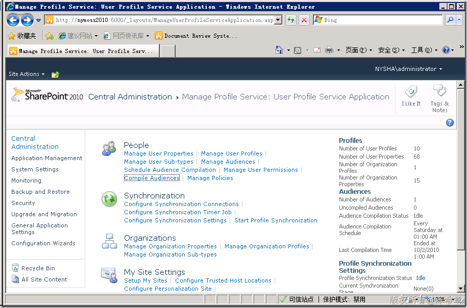
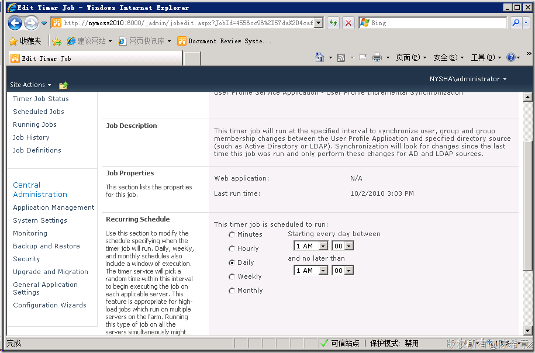

SharePoint中的用户信息和检索的有关知识
原文发表于 2010-10-02, 地址: http://www.cnblogs.com/chenxizhang/archive/2010/10/02/1841342.html
最近在做的项目中涉及到对于SharePoint用户信息的特殊处理，特意整理一些资料出来，给大家参考参考
1. 首先，在SharePoint中，要检索到网站的用户，有下面一些相关知识
http://www.cnblogs.com/LeimOO/archive/2009/09/03/1559790.html
SPWeb site = SPContext.Current.Web; SPUserCollection c1 = site.Users; SPUserCollection c2 = site.AllUsers; SPUserCollection c3 = site.SiteUsers; Users 集合是三个集合中包含成员最少的集合。该集合包含了当前网站中所有已显式分配了权限的外部主体。 AllUsers 集合包括 Users 集合中的所有成员，以及通过组或角色成员资格使用隐式权限访问过网站中的对象的外部用户。例如，假定名为 Brian 的用户（登录名 LITWAREINC\BrianC）从未被显式授予访问某个网站和查看特定列表的权限。但他也许仍可以查看列表，因为他所属的 Active Directory 组已被配置了列表查看权限。当 Brian 首次访问网站或其中任一对象（比如，使用隐式权限查看一个列表）时，他会被添加为 AllUsers 集合的成员，但不会被添加为 Users 集合的成员。 SiteUsers 集合是包含了当前网站集中每个 AllUsers 集合的成员的一个聚合。该集合的成员包括所有已分配了对网站集中所有对象的访问权限的外部主体，以及所有已被授予使用隐式权限访问网站集中所有对象的权限的外部用户。 一般我们在SharePoint上面添加用户的时候，都可能会用组的方式添加。所以，通常情况下，如果要取得所有用户信息（包括通过组的方式添加的那些用户），我们会用AllUsers。 但这里有一个关键： 如果一个用户是通过组的方式添加到网站的，那么当然他是否访问到该网站的。但也只有当他至少访问过一次该网站之后，我们才可以在Web.AllUsers中检索到他。
为什么会有这样的行为呢？其实也不难理解，而且这种设计还是有些道理的。因为我们知道一个Windows用户组可能包含的用户非常多，假设有10000个用户。那么SharePoint不可能立即把这10000个用户的信息都复制过来。所以它采取了相对更加“智能”的方式来复制用户数据：按需复制。 上面提到了复制，这是什么意思呢？其实在SharePoint中，是有一个User Profile的服务的，也就是说，Windows 的AD帐号中的一些信息，会被用某种特定的方式保存在SharePoint中，这就是所谓的用户配置（User Profile)文件。  这个用户配置文件是会定期更新的，默认是每天更新一次  好吧，虽然这样的工作原理我们是理解的。 但是，假设我们无法确认用户是否至少登陆过一次，那么有没有办法根据一个用户名或者邮件地址，获取到该用户的信息呢？ 你可能会想到，实际上这需要查询到AD中的信息。没错，但我们应该怎么来完成这样的任务呢？ 2.通过代码根据邮件地址查询用户信息
这小段代码虽然很简单，但却解决了我的大问题。
var user = SPUtility.ResolveWindowsPrincipal(this.Site.WebApplication, "test@xizhang.com", Microsoft.SharePoint.Utilities.SPPrincipalType.User, true);
if (user != null)
Literal1.Text = string.Format("UserName:{0},LoginName:{1},Email:{2}", user.DisplayName, user.LoginName, user.Email);
else
Literal1.Text = "The user is not exist.";
.csharpcode, .csharpcode pre { font-size: small; color: black; font-family: consolas, "Courier New", courier, monospace; background-color: #ffffff; /white-space: pre;/ } .csharpcode pre { margin: 0em; } .csharpcode .rem { color: #008000; } .csharpcode .kwrd { color: #0000ff; } .csharpcode .str { color: #006080; } .csharpcode .op { color: #0000c0; } .csharpcode .preproc { color: #cc6633; } .csharpcode .asp { background-color: #ffff00; } .csharpcode .html { color: #800000; } .csharpcode .attr { color: #ff0000; } .csharpcode .alt { background-color: #f4f4f4; width: 100%; margin: 0em; } .csharpcode .lnum { color: #606060; }